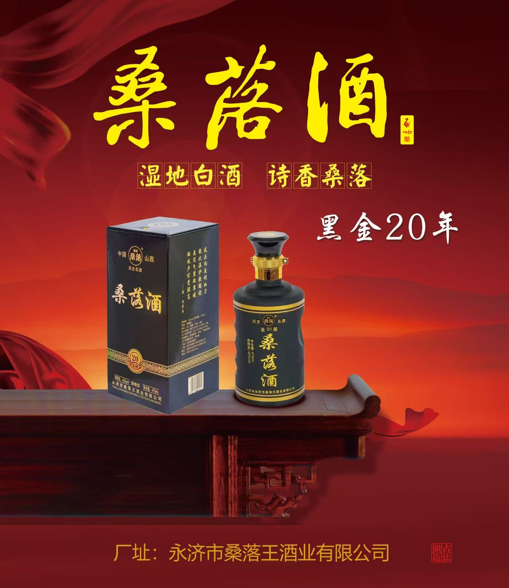
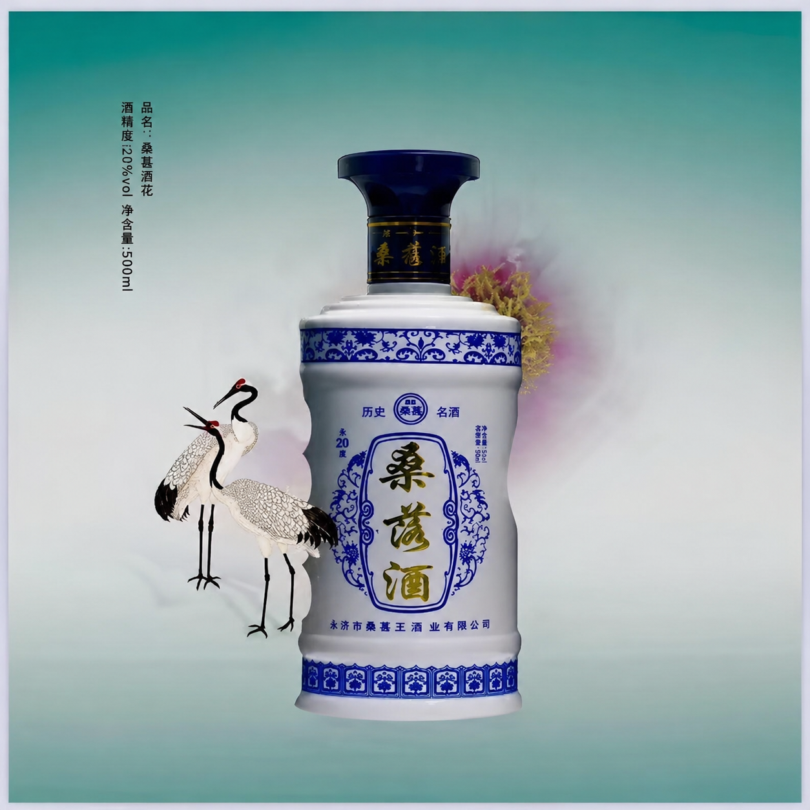
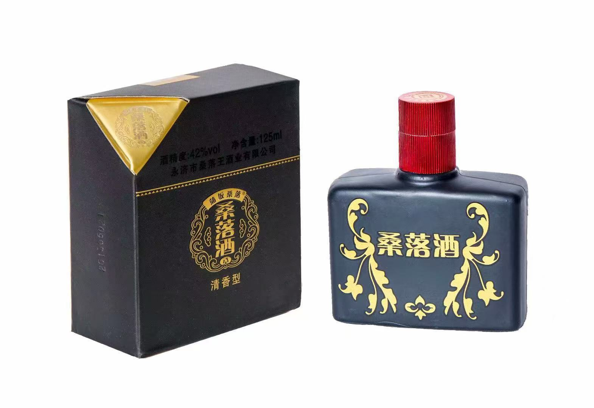

Sang Luo Jiu was born on the ancient Sangluo Sandbar beside the Yellow River in Yongji, Shanxi Province. Its origins are documented as far back as the Northern and Southern Dynasties — the 6th-century Book of Northern Qi proclaims: "Puzhou Sang Luo Jiu — its name resounds across the land."
Tang and Song dynasty poets immortalised our spirit in verse. Wang Zhihuan's famous poem, written overlooking the Stork Tower after a cup of Sang Luo, echoes through Chinese literary history.
Today, Yongji Sangluowang Distillery Co., Ltd. carries that flame — preserving every step of the original earthenware-pit fermentation and copper-pot distillation, refusing shortcuts and additives.
蒲州桑落酒Book of Northern Qi · c. AD 550
名震于天下



Every batch is assessed by our master distiller before release. We source only the finest heritage sorghum from Yellow River wetland fields.
We honour the ancient method — earthenware-pit fermentation, copper-pot distillation, natural maturation. Innovation serves preservation, never the reverse.
Drawing on the universal principle of manaaki — to care for and honour — we treat every partner and customer with the same deep respect we give to our craft.
Sang Luo Jiu emerges on the Sangluo Sandbar, Yellow River, Yongji. The Book of Northern Qi declares it the finest spirit in China.
Poets and officials drink Sang Luo Jiu at the Stork Tower. Wang Zhihuan's masterpiece is composed beside a cup of our spirit — legend merging with liquor.
Elder distillers pass down every step of the earthenware-pit method through oral tradition, preserving the craft across dynastic change.
Yongji Sangluowang Distillery Co., Ltd. is established to preserve, codify and scale the ancient craft with contemporary quality standards.
Seven expressions from the 125ml Signature to the 20-Year Black Gold reserve. Sang Luo Jiu is a recognised standard-bearer of Qingxiang Baijiu excellence.